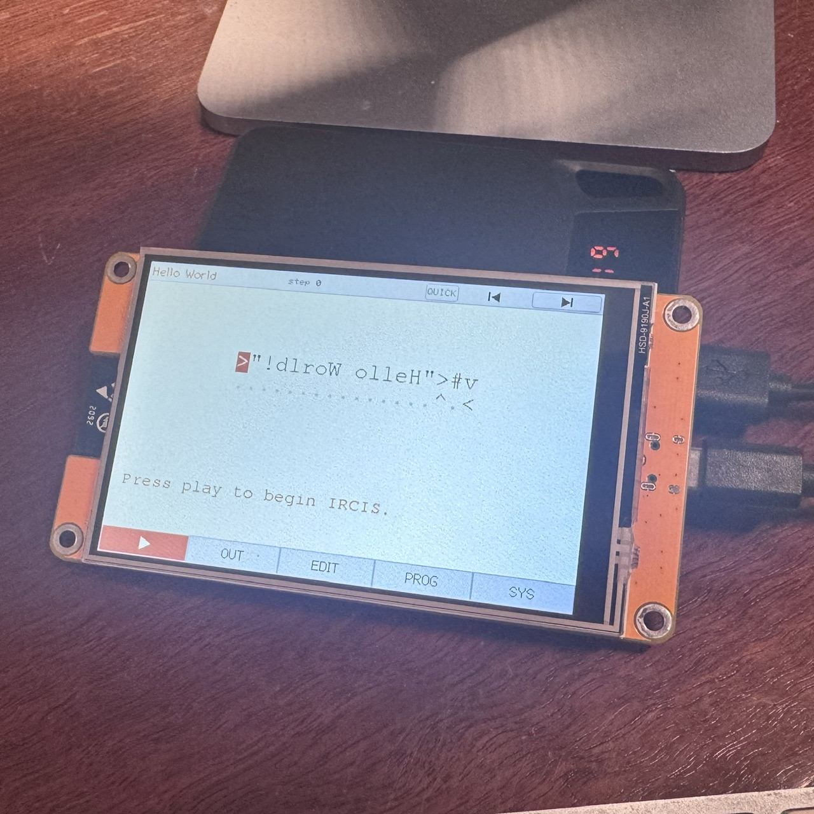
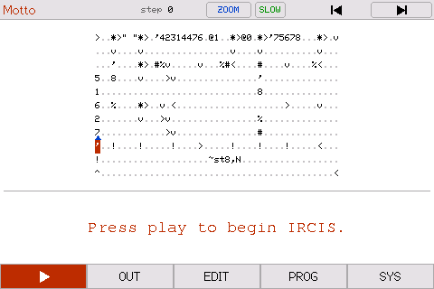

pIRCIS runs IRCIS programs and shows them running.
IRCIS is a small programming language by Arjun Nair (batman-nair); the name stands for I Run Chars I See. A program is a grid of characters, and a runner walks across the grid doing whatever it steps on. It goes in a straight line until a character turns it, and it can split into several runners going different ways at once.
pIRCIS draws the grid, moves the runners a step at a time, and lets you edit the program and watch it again.
Learn IRCIS
Learn IRCIS teaches the language from scratch and builds up to writing your own programs. Every example in it is a real program you can run.
Three ways to run it
- App Store. The app, for iPhone, iPad and Apple silicon Macs. About the app.
- Board. A cheap 4" ESP32 touchscreen, flashed over USB, that runs it on
its own. The
pis for pocket. Getting it on a board. - Emulator. The same firmware in a window on your own macOS, Windows or Linux computer. Set it up.


That is a real program running. A runner splits off at each letter and walks its shape, spelling out IRCIS as they go, and each of them prints its own word of what that stands for.